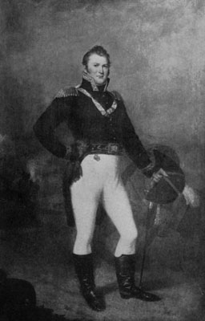
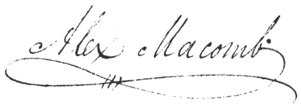

Brigadier General Alexander Macomb
(Samuel L. Waldo- 1815)1
The Centenary of The Battle of Plattsburg (1914)
Floyd Harwood Collection
|
The Defense
of
Fort Moreau
transcribed by
James P. Millard
Actual transcript of General
Alexander Macomb's letter to the Secretary of War written immediately upon the
withdrawal of British forces from Plattsburgh, New York
September 12, 1814 2
(spelling and formatting are from original) |
|
Fort Moreau, Sept. 12, 1814
SIR- I have the honor to inform
you, that the British army, consisting of four brigades, a corps of
artillery, a squadron of horse, and a strong light corps, amounting, in
all, to about fourteen thousand men, after investing this place, on the
north of Saranac river, since the 5th inst. broke up their camp, and
raised the siege this morning, at 2 o'clock; they are now retreating
precipitately, leaving their sick and wounded behind. The enemy opened
his batteries yesterday morning, and continued the cannonading,
bombarding, and rocket-firing, until sunset; by this time our batteries
had completely silenced those of our opponents.
The light troops, and militia,
are now in full pursuit of the enemy, making prisoners in all
directions; deserters are continually coming in, so that the loss of the
British army, in this enterprize, will be considerable.
A more detailed report will be made of the siege, and
circumstances attending it, as soon as possible.
The officers, and men, have all
done their duty. The artillery, and the engineers, have performed their
functions, with a zeal and precision highly creditable to themselves,
and honorable to their country. Our loss is trifling, indeed; having
only 1 officer and 15 men killed, and 1 officer and 30 men wounded.
The militia of New-York, and
volunteers of Vermont, have been exceedingly serviceable, and have
evinced a degree of patriotism, and bravery, worthy of themselves and
the states to which they respectively belong. The strength of the
garrison is only 1,500 effective men, rank and file.
I have the honor, &c.

ALEX. MACOMB.
Hon. Sec. War. |
|
Click HERE to read Macomb's
detailed report of the action (15 Sept. 1814):
Sources/Notes:
1 The Centenary of The Battle of Plattsburg. 1914.
(Albany, NY: The University of the State of New York)15
2
H. A. Fay.
1817. Collection of Official
Accounts, in detail, of all the battles fought by sea and land, between the navy
and army of the United States and the navy and army of Great Britain, during the
years 1812, 13, 14, & 15. (New York: E. Conrad) 236, 237 (Library of
American Civilization: LAC 12346)
|